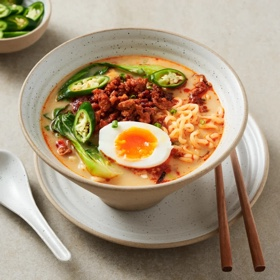

← All recipes
15-Minute Creamy Korean Chicken Ramen

Servings: 4 · Prep: 10 minutes · Cook: 15 minutes
Ingredients
- 6 cups chicken stock
- 2 cups unsweetened soy milk
- 4 x individual instant ramen noodle cakes
- 4 baby bok choy, halved lengthways
- 2 soft-boiled eggs, halved, to serve
- finely sliced green chilli, to serve
- Spicy chicken topping
- 1 tbsp vegetable oil
- 300g (10.5 oz) chicken mince
- 3 garlic cloves, roughly chopped
- 1 tsp finely grated ginger
- 2 tbsp spring onion, finely chopped, plus extra to serve
- 2 tbsp gochujang
- 1 tbsp soy sauce
- Soup flavouring paste
- ¼ cup Japanese white sesame paste* or smooth peanut butter
- 2 tbsp chilli oil
- 2 tbsp white vinegar
- 2 tbsp soy sauce
Directions
- Bring a pot of water to the boil (you’ll need it to cook the noodles and bok choy later).
- For the broth, add the chicken stock and soy milk to a large pot and place over high heat. Bring to a simmer.
- Meanwhile, to make the spicy chicken topping, place a wok or frying pan over high heat. Once hot, swirl in the oil. Add the chicken mince, spread it out in the wok, and then leave to sear for 2 minutes until it’s evenly coloured. Add in the garlic, ginger and spring onion, followed by the gochujang paste. Stir-fry for another minute until well incorporated into the other ingredients and everything is smelling delicious. Drizzle in the soy sauce. Turn the heat to low and gently simmer for 3-4 minutes or until most of the sauce has been absorbed and the chicken is cooked through. Remove from the heat and set aside until ready to serve.
- For the soup flavouring paste, combine the ingredients in a small bowl. Divide among serving bowls.
- Cook the ramen noodles in the boiling water according to packet instructions. Use tongs to remove the noodles and divide among serving bowls. Use the same noodle cooking water to quickly cook the bok choy for about a minute or until just tender. Transfer the bok choy into the serving bowls.
- Ladle over the hot soup, mixing to combine it with the paste. Top with the spicy chicken mixture and an egg half, sprinkle with chilli and extra spring onion, then serve.
Notes
Japanese or Chinese white sesame paste is made from roasted sesame seeds. It’s available online or from Asian supermarkets. Substitute peanut butter if you can’t find the sesame paste.
Original source: marionskitchen.com